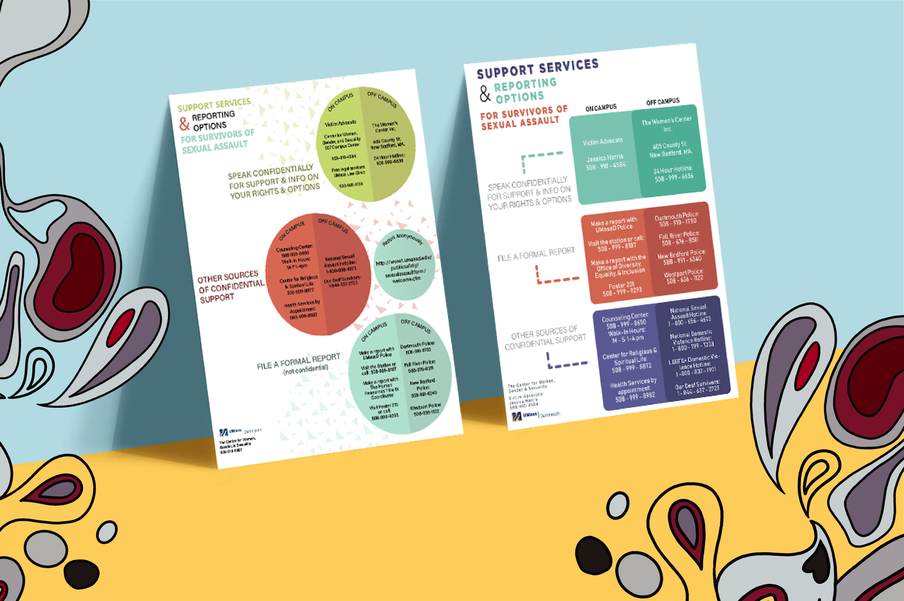

projects


poster designs used to depict the thicks and thins of the Bodoni typeface. . . . . . . . . . . . . . . . . . . . . . single object poster depicting and celebrating the form of a krazy-straw.

artistic study of different types of faces.
client work

posters showcasing resources available to sexual assault survivors on campus. . . . shirt design created for the tech. division at Anime Boston.